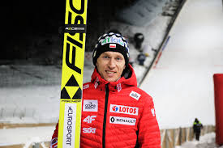

Stefan Hula – reprezentant Polski w skokach narciarskich. Zawodnik klubu KS Eve-nement Zakopane, brązowy medalista igrzysk olimpijskich w Pjongczang, w konkursie drużynowym, brązowy medalista mistrzostw świata w lotach narciarskich w drużynie. Zwycięzca drużynowego konkursu Pucharu Świata w Zakopanem. Srebrny medalista mistrzostw świata juniorów. Syn byłego medalisty mistrzostw świata w kombinacji norweskiej – Stefana Mariana Huli.
Stefan Hula urodził się 29 września 1986 roku w Szczyrku. Reprezentuje barwy klubu KS Eve-nement Zakopane, do którego należy również Kamil Stoch. Ma 174 cm wzrostu i waży 57 kg. 4 stycznia 2006 roku debiutował w zawodach Pucharu Świata w Innsbrucku (47. miejsce). Swoje pierwsze punkty zdobył rok później podczas konkursu w Zakopanem (22. miejsce). Popularny „Stefanek” obok Kamila Stacha, Macieja Kota i Dawida Kubackiego tworzył drużynę, która wywalczyła medal podczas olimpijskiego konkursu na dużej skoczni w Pjongczang.

Brązowy medal igrzysk olimpijskich - Pjongczang 2018 (konkurs drużynowy), Brązowy medal mistrzostw świata w lotach - Oberstdorf 2018 (konkurs drużynowy), Srebrny medal mistrzostw świata juniorów - Stryn 2004 (konkurs drużynowy), Zwycięstwo w zawodach Pucharu Świata w Zakopanem 2018 (konkurs drużynowy),

Ojciec skoczka - Stefan Marian Hula, to były zawodnik kombinacji norweskiej. Wywalczył brązowy medal mistrzostw świata w narciarstwie klasycznym w Falun w 1974 roku. Stefan Hula junior ma brata, Przemysława i dwie siostry, Katarzynę i Magdalenę, które kiedyś trenowały saneczkarstwo. W maju 2012 roku ożenił się ze swoją partnerką Marceliną. Razem prowadzą firmę "Huligans", w której Marcelina szyje kombinezony dla skoczków narciarskich (uszyła kombinezon, w którym Kamil Stoch zdobył dwa złote medale na igrzyskach w Soczi). Stefan i Marcelina mają dwie córki.